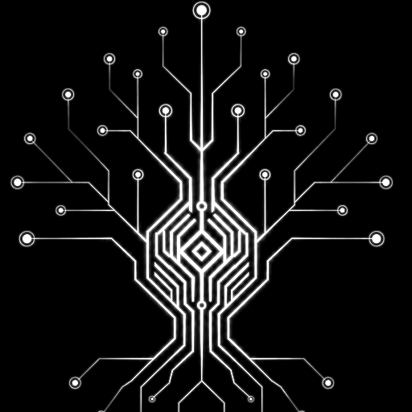

Manifest-first
Descreva workflows, integrações e times como manifestos versionados. apply, diff, rollback — GitOps de verdade, com histórico e dry-run.

Workflows declarativos, integrações plugáveis e surfaces sob medida — na sua infraestrutura, sob o seu controle.
$ yggdrasil init
✓ Postgres provisionado
✓ yggdrasil-core no ar :8080
✓ adapters registrados
control plane de pé. próximo: yggdrasil apply -f workflow.yamlUm catálogo mostra seus sistemas. O Yggdrasil opera eles.
Não é uma camada bonita por cima da sua infra. É o plano de controle que executa — declarativo, versionado e auditável.
Tudo é manifesto. Tudo é versionado. Tudo roda na sua infra.
Descreva workflows, integrações e times como manifestos versionados. apply, diff, rollback — GitOps de verdade, com histórico e dry-run.
Dispare e acompanhe runs (run, ops, logs). Reactors reagem a eventos do seu domínio. O orquestrador faz o trabalho — não só desenha o diagrama.
Adapters instaláveis no modelo família → tipo → instância. yggdrasil install <repo> e o sistema novo fala com todos os outros.
Cada integração pode publicar sua própria interface interna — dashboard, wizard, API ou bot — sobre um design system compartilhado e a sessão do Yggdrasil.
A CLI dirige; o core tem a autoridade; os adapters tocam seus sistemas; as surfaces dão a cara.
Self-hosted por construção. yggdrasil init sobe Postgres + core + adapters no seu cluster. Nada sai da sua fronteira.
Contrato explícito. Cada adapter publica seu Describe() — capacidades, schemas e versão. O core valida antes de executar.
Transporte à sua escolha. HTTP por padrão; RabbitMQ/AMQP quando você precisa de fila. O mesmo adapter, sem reescrever.
Cada integração é um adapter independente no modelo família → tipo → instância. Declara seu contrato via Describe(), instala com um comando e troca de provider sem mexer no workflow — AWS por GCP, e o YAML continua o mesmo.


$ yggdrasil install dakasa-yggdrasil/integration-grafana
Falta a sua? O contrato de integração é público e há um template oficial — yggdrasil new integration <nome> e você tem um adapter de pé.
Surfaces são as bordas de UI do Yggdrasil — o painel interno do seu time de plataforma, não um frontend de cliente. Um console central agrega todas elas, sobre um design system compartilhado e a sessão de auth do core.
Uma surface é modelada como um slime: pode ser dashboard, wizard, API, bot ou MCP. A forma é livre — o que é fixo são os invariantes.
Auth pela sessão do Yggdrasil (nunca reimplementada), backend-agnostic (fala só com a API do core), multi-tenant, federável e sem autoridade de negócio.
O surface-toolkit traz o IntegrationAdminShell, hooks e componentes prontos. O console reúne console, auth e os painéis de cada integração num lugar só.
$ yggdrasil new surface acme-ops --owner acme
Scaffold a partir do template oficial e a surface já nasce plugada no console — autenticada, multi-tenant e federável. Sem reimplementar login, sem hardcodar cloud.
Sem clicar em dez telas. Do bootstrap ao rollback, tudo na CLI — scriptável, versionável, auditável.
init · login --totp — sobe e autentica (com MFA)apply · diff · get · describe — manifestosrun · ops · logs — execução e observaçãorollback · delete — desfaça com segurançainstall · new — integrações e surfacesupdate — a própria CLI se atualiza$ yggdrasil login --server https://cp.acme.dev --totp 481920
✓ sessão ativa como giovanni
$ yggdrasil apply -f onboarding.yaml --dry-run
~ workflow/onboarding v3 → v4 (sem efeitos)
$ yggdrasil run onboarding --input user=ana
▸ run r-9f2a despachado
$ yggdrasil ops get r-9f2a
● succeeded · 6 passos · 2.1sCatalogar seus sistemas é metade do problema — a outra metade é operá-los, com segurança e histórico. É aí que um control plane entra.
| Capacidade | Yggdrasil | Catálogo / portal | SaaS fechado |
|---|---|---|---|
| Self-hosted, seus dados na sua fronteira | ✓ | ✓ | ✗ |
| Executa workflows (não só cataloga) | ✓ | parcial | varia |
| Runtime de integração (instala adapters) | ✓ | ✗ | ✗ |
| Surfaces próprias por integração | ✓ | plugins | ✗ |
| Manifestos declarativos + versionamento | ✓ | parcial | ✗ |
| CLI de ciclo de vida completo | ✓ | ✗ | ✗ |
| Licença permissiva (Apache-2.0) | ✓ | varia | ✗ |
Roda no seu Kubernetes, sua VPC, seu Postgres. Nenhum dado de cliente atravessa a fronteira de um terceiro.
Apache-2.0, sem cobrança por assento. O contrato é aberto; você estende sem pedir licença a ninguém.
De um init local a um control plane multi-time com filas, reactors, dezenas de integrações e surfaces.
Sem cadastro. Sem cartão. Só o seu cluster e a CLI.
$ yggdrasil init # standalone
$ yggdrasil init --server https://cp.acme.dev # conectar